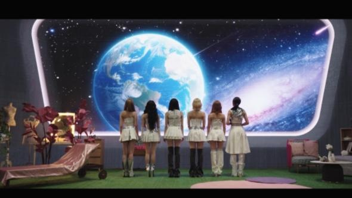
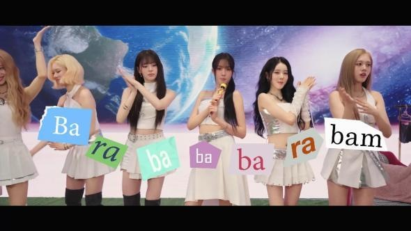
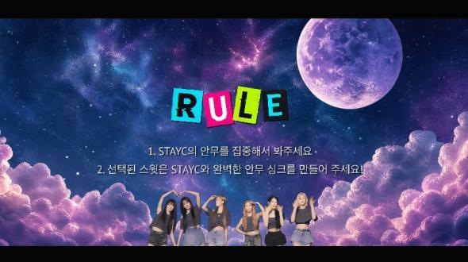
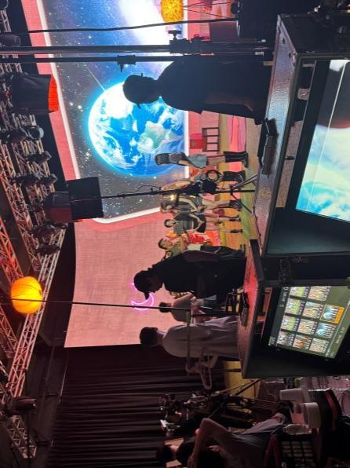
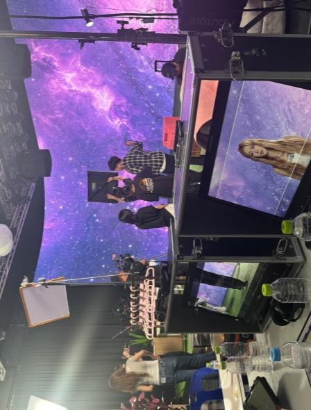

OPENING & VCR
STAYC CONCERT
2026 스테이씨 콘서트

- CATEGORY
- OPENING & VCR
- YEAR
- 2026
- SCOPE
- 콘서트 오프닝 · VCR 제작
OVERVIEW
2026 스테이씨 콘서트
우주를 배경으로 펼쳐지는 퓨처리스틱하고 힙한 무드. 스테이씨 콘서트의 오프닝과 VCR에 아티스트의 세계관을 담았습니다.



